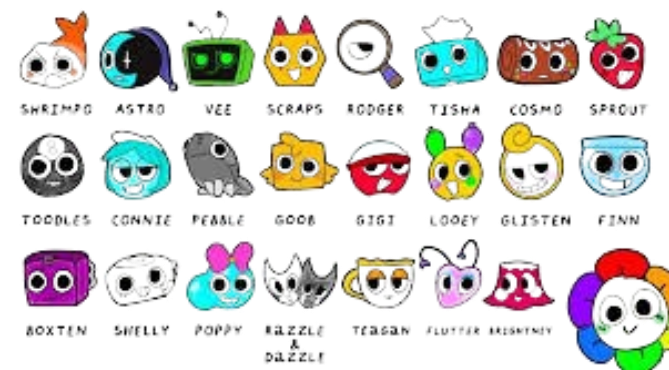

Dandy’s World is a team rogue-like mascot horror in which you must travel between floors with up to 7 other people completing ichor-extraction machines while simultaneously avoiding twisteds. Twisteds are characters or “Toons” overcome with ichor, turning them corrupt and almost zombie-like. The amount of machines and twisteds become larger after every few floors. There are 6 different stat categories that vary between the 38 different playable Toons. 8 of these Toons are “main Toons”, these toons are different from the other 30 due to having one extra star in their stat pool along with a second ability. These benefits come at the cost of one of their 3 hearts. Depending on what role you wish to play, you might lean towards characters with certain stats.
